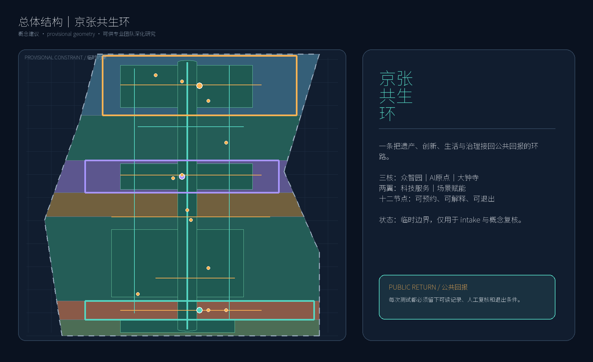
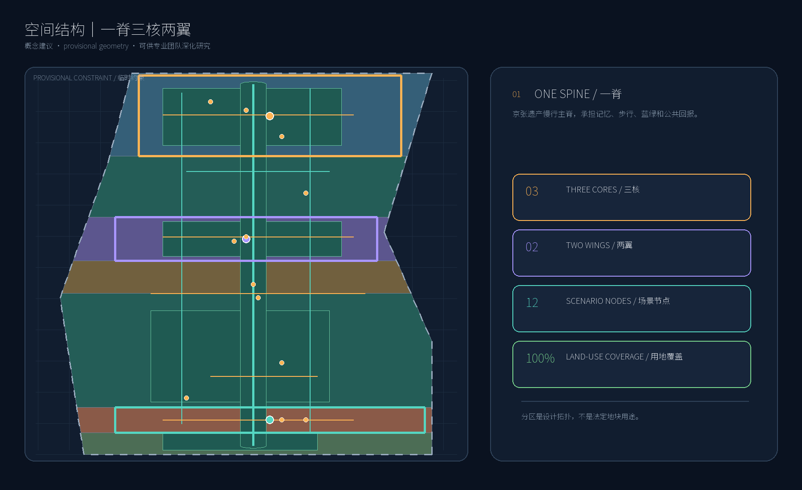
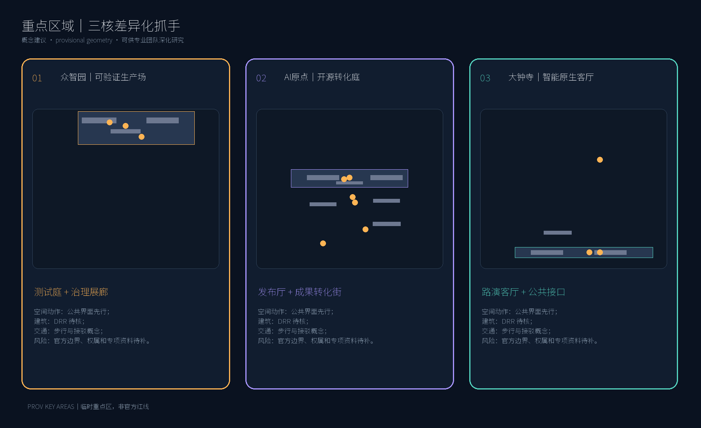
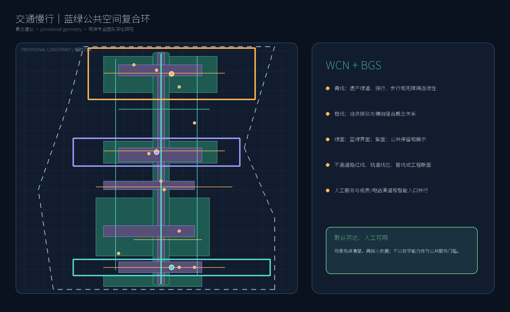
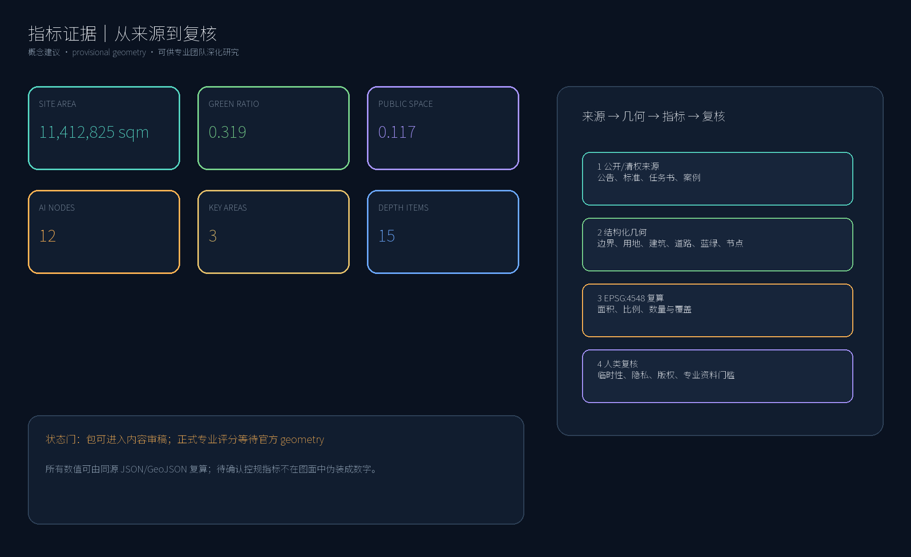

CENTENNIAL JING-ZHANG AI INNOVATION BELT
京张共生环
把遗产、创新、日常生活与人工复核接回公共回报的城市设计概念。
内容审稿就绪；依赖官方 geometry 的正式专业评分仍待正式资料。
package_state=ready_for_reviewprovisional
package_state=ready_for_reviewprovisional
总体面积11,412,825 sqm
绿地比例0.318529
公共空间比例0.117495
AI 节点12
重点区3
深度项15
总览地图

三层范围｜用地分区

统筹研究范围 43.6 平方公里 · 总体设计范围 11.4 平方公里 · 重点区域 368.4 公顷。提交几何为 provisional；用地分区仅为设计证据。
重点区域

众智园负责验证，AI 原点负责转化，大钟寺把价值回到日常生活。
交通慢行

蓝绿公共空间
绿地与公共空间图层是概念叠加层，不是法定绿线或蓝线。
建筑
12 个概念建筑基底采用保留、改造、新建和重组候选参考分类；高度与容积率待正式条件。
更新项目
8 个概念项目从公共空间和人工服务先行，逐步进入专业深化；不作权属或资金承诺。
AI 场景
12 张场景卡，其中 3 个测试验证场景，采用最小数据、人工复核和暂停/退出门。
核心指标

以上数字使用 data-metric 声明并链接到 metrics.json。
任务覆盖
23 条 mandatory 任务 / 6 项 agent 任务 / 15 项深度项
agent.1
agent.2
agent.3
agent.4
agent.5
agent.6
自检状态
本地运行 deterministic validation、空间复核、视觉封装和专业证据复核。provisional geometry 是已记录的数据门槛，不是官方批准。
来源
OFFICIAL-ANNOUNCEMENT · AGENT-TASKBOOK · SOURCE-REGISTRY · BOUNDARY-SOURCE
假设
官方 polygon、控规、道路、地块、建筑、文保、市政资料和运营角色仍待补齐。